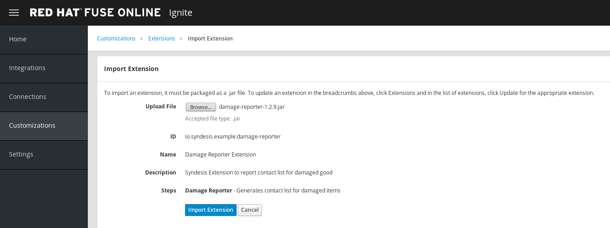
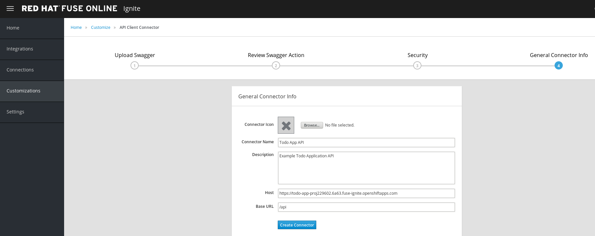
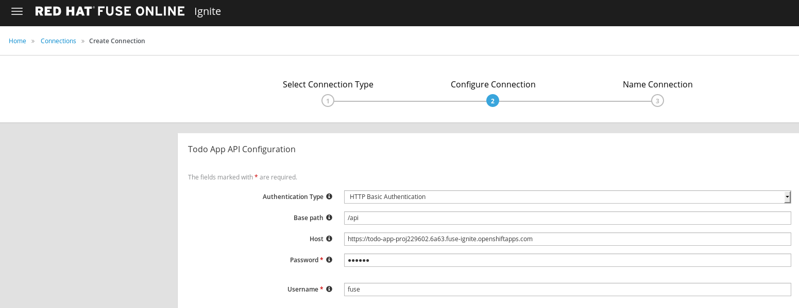
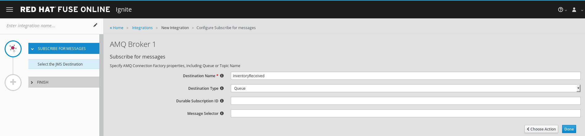
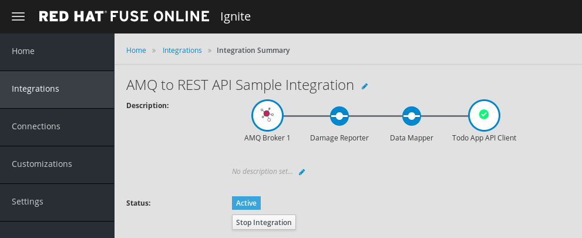

$ wget https://github.com/syndesisio/fuse-online-tp3-sample-extension/releases/download/1.2.9/damage-reporter-1.2.9.jarFuse Online
Table of Contents
AMQ broker setup
Login to background https://console.fuse-ignite.openshift.com/console/, go into the Fuse Online project, scale up the AMQ broker:

Login to Fuse Online https://app-proj229602.6a63.fuse-ignite.openshiftapps.com, go into Connections, click Create Connection, select AMQ

Entry the following entry to configure the AMQ connection:
-
Broker URL - tcp://broker-amq-tcp:61616
-
Username - amq
-
Password - topSecret

Click Validate make sure the connection works fine, click Next, entry AMQ Broker 1 as Connection Name, click Create to finish the AMQ connection creation.
Damage Reporter setup
Download damage-reporter-1.2.9.jar
In Fuse Online click Customizations, navigate to Extensions panel, click Import Extension to start import extension, after select the extension jar, a Import Extension panel generated, click Import Extension to finish importing.

TO DO APP setup
In the Customizations → API Client Connectors, click Create API Connector, select Use a URL paste the https://todo-app-proj229602.6a63.fuse-ignite.openshiftapps.com/swagger.json as URL,

click Next to go into Review Swagger Actions, continue click Next to go into Security that accept HTTP Basic Authorization, continue click Next, in the General Connector Info panel, pase https://todo-app-proj229602.6a63.fuse-ignite.openshiftapps.com as Host, click Create Connector to finish connector creating.

Download a todo icon
$ wget https://todo-app-proj229602.6a63.fuse-ignite.openshiftapps.com/images/todo_icon.pngEntry the Todo App API, click Browse, Navigate to todo_icon.png which download above.

In Fuse Online, go into Connections, click Create Connection, select Todo App API, in Configure Connection panel, enter fuse as username, redhat as password.

Enter Todo App API Client as Connection Name in Name Connection panel. Click Create to finish creating.
AMQ TO REST INTEGRATION
In Fuse Online, Integrations → Create Integration → Choose a Start Connection, click AMQ Broker 1. On the Choose an Action page, click the Subscribe for Messages action to receive messages from the queue you specify:
-
Destination Name - inventoryReceived
-
Destination Type - Queue

On the Choose a Finish Connection page click Todo App API Client, then click Create new task in Choose an Action page

On the centre of Add to Integration, click Add a Step, On the Choose a Step page, click Damage Reporter

On the centre of Add to Integration, click Add a Step again, On the Choose a Step page, click Data Mapper, In the Sources panel, click the task field, In the Target panel, expand the body field and click task, Click DONE to finish setting.

Click Publish enter AMQ to REST API Integration to Integration Name field and click Publish, the integration will go into In Progress spinning circle, once finished generation the integration will go into Active status as below:

Test
In a new browser window, access https://todo-app-proj229602.6a63.fuse-ignite.openshiftapps.com/, Click Show JMS Form, Edit the XML contents and click Send JMS Message.